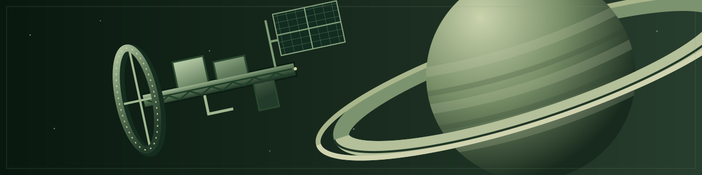

Encyclopedia
Nova Protocol opens in 2078, in Saturn's developing settlement network, roughly 10-15 years after the first permanent ring station. Dates use Earth's calendar. Earth remains a superpower, but Saturn is where new workplaces are becoming homes and new arrivals are becoming communities.
The settlement boom is succeeding. Industry grows, people find opportunities, and families build lives. Yet housing, essential services, and the right to stay often depend on employment. A permanent home is promised under rules designed for a temporary posting.
Saturn is being sold as a permanent home, but administered as a temporary worksite.
{kind=link}

World background
- Economy: expansion, local industry, imports, independent operators, and research.
- Society and settlement: arrivals, station homes, working lives, and the settlement network.
- Law and power: residency, corporate influence, public authority, security, and worker representation.
- Ships and travel: workships, commercial journeys, express transfers, and the limits of ship design.
Places
- Keystone: the first permanent station, built as a construction and supply hub and now a substantial home.
- Aquila: a newer freight-hub town and a competing port.
- Baikal: an independent water-processing station and home to a small permanent community.
Companies and institutions
- EarthWorks Industrial: Keystone's founding operator, rooted in construction, supply, and infrastructure.
- Farspan Logistics: an Earth-Saturn freight carrier and Aquila's operator, both a supplier and competitor to EarthWorks.
- Clearwell Waterworks: a locally founded water operator, started by former EarthWorks staff without an Earth parent.
Ships
- Kaveri: Clearwell's workship, captained by Jonah Mercer.
- Ebro: Clearwell's water hauler, serving Baikal's operation.
- Gantry: an EarthWorks workship associated with Keystone.
- Bastion: an EarthWorks security and escort vessel.
- Foundation: a large EarthWorks construction and repair support ship.
- Altair: a Farspan Earth-Saturn carrier that calls at Aquila.
- Redress: a former escort now used as an armed pirate raider.
- Windfall: a converted work/cargo vessel carrying stolen loads alongside Redress.
Characters
- Jonah Mercer: Kaveri's captain, expecting to return to Earth after the posting.
- Leila Haddad: chief engineer, already at home at Saturn.
- Tomas Vega: pilot and navigator, careful about risks volunteered on the crew's behalf.
- Rina Okafor: work operations lead and advocate for station residents.
- Samir Bell: systems technician and first-aider, attentive to what the records support.
- Nadia Sen: Gantry's captain and pilot, professional and composed, with clear expectations of the employer's obligations.
- Owen Park: Gantry's engineer, contributing technical judgment to a small cross-trained crew.
- Ivo Marin: Gantry's work operations technician, responsible for practical work and attentive to crewmates' needs.
- Elena Ward: Clearwell's co-founder and Baikal's resident manager, practical and approachable, with dry humour.
The Story archive presents the comic. The comic and mainline campaign share one story; these articles provide optional depth to its world and people.